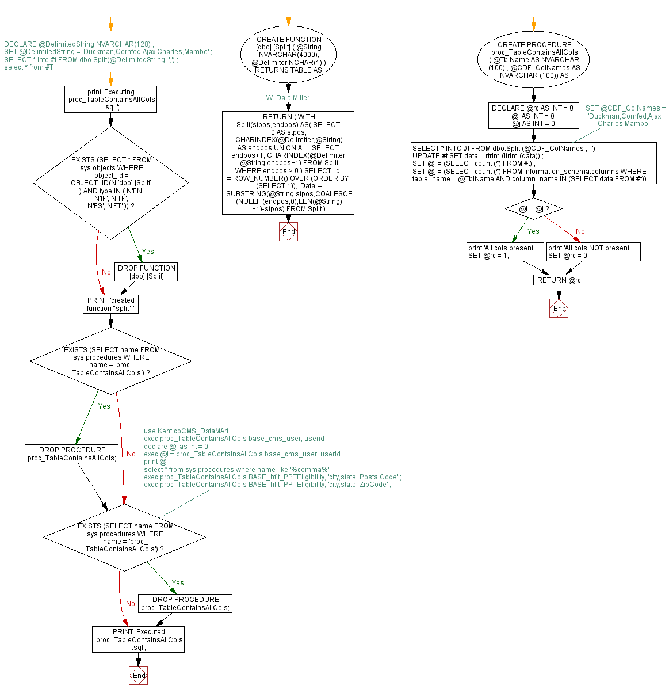

<a href="proc_TableContainsAllCols3.png"></a>
/*----------------------------------------------------------- DECLARE @DelimitedString NVARCHAR(128) ; SET @DelimitedString = 'Duckman,Cornfed,Ajax,Charles,Mambo' ; SELECT * into #t FROM dbo.Split(@DelimitedString, ',') ; select * from #T ; */ go print 'Executing proc_TableContainsAllCols.sql '; go IF EXISTS (SELECT * FROM sys.objects WHERE object_id = OBJECT_ID(N'[dbo].[Split]') AND type IN ( N'FN', N'IF', N'TF', N'FS', N'FT' )) DROP FUNCTION [dbo].[Split] go CREATE FUNCTION [dbo].[Split] ( @String NVARCHAR(4000), @Delimiter NCHAR(1) ) RETURNS TABLE AS RETURN ( -- W. Dale Miller WITH Split(stpos,endpos) AS( SELECT 0 AS stpos, CHARINDEX(@Delimiter,@String) AS endpos UNION ALL SELECT endpos+1, CHARINDEX(@Delimiter,@String,endpos+1) FROM Split WHERE endpos > 0 ) SELECT 'Id' = ROW_NUMBER() OVER (ORDER BY (SELECT 1)), 'Data' = SUBSTRING(@String,stpos,COALESCE(NULLIF(endpos,0),LEN(@String)+1)-stpos) FROM Split ) GO PRINT 'created function "split" '; GO IF EXISTS (SELECT name FROM sys.procedures WHERE name = 'proc_TableContainsAllCols') BEGIN DROP PROCEDURE proc_TableContainsAllCols; END; GO /*--------------------------------------------------------------------------------- use KenticoCMS_DataMArt exec proc_TableContainsAllCols base_cms_user, userid declare @i as int = 0 ; exec @i = proc_TableContainsAllCols base_cms_user, userid print @i select * from sys.procedures where name like '%comma%' exec proc_TableContainsAllCols BASE_hfit_PPTEligibility, 'city,state, PostalCode' ; exec proc_TableContainsAllCols BASE_hfit_PPTEligibility, 'city,state, ZipCode' ; */ IF EXISTS (SELECT name FROM sys.procedures WHERE name = 'proc_TableContainsAllCols') BEGIN DROP PROCEDURE proc_TableContainsAllCols; END; GO CREATE PROCEDURE proc_TableContainsAllCols ( @TblName AS NVARCHAR (100) , @CDF_ColNames AS NVARCHAR (100)) AS BEGIN DECLARE @rc AS INT = 0 , @i AS INT = 0 , @j AS INT = 0; -- SET @CDF_ColNames = 'Duckman,Cornfed,Ajax,Charles,Mambo' ; SELECT * INTO #t FROM dbo.Split (@CDF_ColNames , ',') ; UPDATE #t SET data = rtrim (ltrim (data)) ; SET @i = (SELECT count (*) FROM #t) ; SET @j = (SELECT count (*) FROM information_schema.columns WHERE table_name = @TblName AND column_name IN (SELECT data FROM #t)) ; IF @i = @j BEGIN print 'All cols present' ; SET @rc = 1; END; ELSE BEGIN print 'All cols NOT present' ; SET @rc = 0; END; RETURN @rc; END; GO PRINT 'Executed proc_TableContainsAllCols.sql'; GO
Hide code
Visustin flow chart for T-SQL